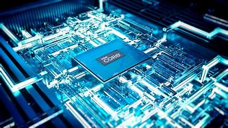
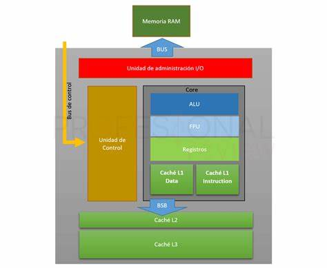

Definición y función básica.
El procesador, oficialmente conocido como la Unidad Central de Procesamiento (CPU), es incuestionablemente el componente más crítico de cualquier sistema informático o dispositivo electrónico moderno. Piensa en él como el cerebro digital que no solo procesa absolutamente todo lo que sucede dentro de tu equipo, sino que también ejecuta cada acción imaginable. Desde el simple movimiento del cursor del mouse hasta la apertura de una aplicación compleja, la navegación web o el disfrute de un videojuego exigente, cada una de estas operaciones se traduce en miles de millones de instrucciones que el procesador debe interpretar y llevar a cabo en apenas fracciones de segundo.
Velocidad y Rendimiento: Una Conexión Directa La velocidad y eficiencia del procesador son directamente proporcionales a la capacidad de respuesta y el rendimiento general de tu máquina. Un procesador más rápido y potente puede manejar muchísimas más instrucciones por segundo, lo que se traduce en programas que se abren casi al instante, tareas que se completan en menos tiempo y una experiencia de usuario notablemente más fluida y sin interrupciones. Por el contrario, un procesador lento puede hacer que tu dispositivo se sienta perezoso, con aplicaciones que tardan en cargar y tareas que se vuelven frustrantemente lentas.
Además, es crucial entender que la importancia de este componente vital no se limita a tu computadora personal. El procesador actúa como el "corazón pensante" en prácticamente todos los dispositivos electrónicos inteligentes que nos rodean, desde tu smartphone y tableta hasta consolas de videojuegos, televisores inteligentes e incluso electrodomésticos modernos. Son el núcleo indispensable de cualquier dispositivo que necesite procesar información para funcionar.
La Pastilla de Silicio: Un Milagro de la Ingeniería Físicamente, un procesador es una diminuta pero extraordinariamente compleja pastilla de silicio, grabada con circuitos microscópicos. En una computadora de escritorio, esta pastilla se inserta cuidadosamente en un conector especial llamado socket, que reside en la placa madre (o tarjeta madre) dentro del gabinete. Esta conexión garantiza la comunicación eléctrica y física perfecta con el resto de los componentes del sistema. Sin embargo, en dispositivos más compactos como las laptops, el procesador suele estar soldado directamente a la placa base para optimizar el espacio y la integración, lo que generalmente impide su reemplazo o actualización por parte del usuario.
Esta delicada pastilla de silicio está protegida por una cubierta, a la que llamamos encapsulado. Este no solo actúa como un escudo físico, sino que también es crucial para la disipación del calor generado por el procesador y sirve como la interfaz que permite la conexión con la placa madre. Existen tres tipos principales de encapsulados, que difieren en su diseño de conexión: PGA (Pin Grid Array), LGA (Land Grid Array) y BGA (Ball Grid Array).
Evolución Constante y Fabricantes Líderes El procesador es, sin duda, uno de los componentes de la computadora que ha experimentado la mayor y más rápida evolución. La demanda constante de dispositivos más rápidos y eficientes ha empujado a los ingenieros a innovar continuamente, ofreciendo generaciones de procesadores con mejoras significativas en rendimiento y consumo energético. Esta evolución no ha sido solo interna, a nivel de la microarquitectura y la cantidad de transistores, sino que también su forma externa ha sido modificada y optimizada para una mejor disipación de calor y una integración más eficaz. Actualmente, los fabricantes de procesadores de PC más populares y reconocidos a nivel mundial son Intel y AMD, quienes se encuentran en una constante competencia por liderar la innovación tecnológica.
El Corazón de un Ecosistema: Dependencia del Conjunto Aunque se le considera el componente más importante y, generalmente, el más caro, es fundamental entender que el procesador no funciona de forma aislada. Sin el resto de los componentes del sistema, como la memoria RAM, el almacenamiento (disco duro o SSD), la placa madre que los interconecta y la fuente de alimentación que les proporciona energía, el procesador simplemente no podría servir ni actuar. Es la sinergia y la comunicación fluida entre todos estos elementos lo que permite que la computadora opere de manera eficiente y ejecute todas las tareas que le encomendamos.
Componentes y Funcionamiento Interno del Procesador
componentes
Desde un punto de vista físico, la Unidad Central de Procesamiento (CPU) es una estructura increíblemente compleja, comparable a una ciudad microscópica construida con miles de millones de transistores fabricados principalmente con silicio. Estos minúsculos interruptores electrónicos se combinan para formar puertas lógicas, que son los bloques de construcción fundamentales de todos los circuitos digitales. Estas puertas lógicas, a su vez, dan forma a las diversas estructuras internas del procesador, permitiéndole tratar las instrucciones de manera ordenada y ejecutar el código de los programas que utilizamos.
La Velocidad del Procesador: El Ritmo del Trabajo La velocidad de un procesador se expresa en hercios (Hz), una unidad que mide la cantidad de operaciones o "ciclos" que la CPU puede realizar por segundo. Este ritmo de trabajo lo marca una señal rítmica conocida como "reloj". Piensa en el reloj como un metrónomo interno que emite una señal digital de onda cuadrada, marcando el compás para que todas las operaciones del proces procesador se sincronicen. La frecuencia del reloj indica la cantidad de pulsos por segundo a la que trabaja la CPU. En la actualidad, no es raro encontrar procesadores con velocidades que superan los 3 GHz (3 mil millones de hercios). Esto significa que pueden realizar miles de millones de ciclos de reloj por segundo, un salto tecnológico monumental si lo comparamos con los primeros procesadores lanzados hace décadas, que operaban a velocidades muchísimo menores. Este aumento exponencial en la velocidad de reloj, sumado a otras mejoras arquitectónicas, permite que las computadoras modernas ejecuten tareas complejas con una rapidez asombrosa.
El Proceso de Ejecución de Instrucciones A pesar de la complejidad interna de las CPU modernas, el funcionamiento básico de un procesador se rige por una serie de etapas comunes y repetitivas para cada instrucción:
- Captación (Fetch): El procesador busca la siguiente instrucción a ejecutar en la memoria principal (RAM).
- Decodificación (Decode): La instrucción captada se traduce a un lenguaje que el procesador puede entender y ejecutar. Aquí se determina qué operación debe realizarse y qué datos se necesitan.
- Ejecución (Execute): Se realiza la operación específica de la instrucción (por ejemplo, una suma, una comparación, un movimiento de datos). Esto puede involucrar a las unidades aritmético-lógicas (ALU) y otras partes funcionales del procesador.
Aunque las arquitecturas de cada fabricante (como Intel o AMD) y cada generación de procesadores ejecutan estas etapas con variaciones y optimizaciones distintas (como el "pipelining" o ejecución especulativa), la intencionalidad general de este ciclo de trabajo es siempre la misma: procesar instrucciones de forma secuencial y eficiente.
Componentes clave de un procesador (ALU, CU, caché, etc.). Historia de los procesadores Breve recorrido desde los primeros procesadores hasta los más avanzados de la actualidad. Evolución de los procesadores en dispositivos móviles y computadoras.
DESARROLLO
Unidad control: Su objetivo principal es el de interpretar las instrucciones y supervisar su ejecución. Genera señales adecuadas de control y sincroniza la actuación de las unidades internas y externas del procesador.
Los datos fluyen entrando desde la memoria hacia la unidad aritmético lógica, regresan a la memoria y luego salen. La unidad de control supervisa el flujo de la información en este orden.
Otra de las tareas que realiza la unidad de control es de gestionar la aceptación de comandos que ingresan por el bus de control y generar el posicionamiento de salida. Existen 2 tipos de Unidades de control, la cableada y la microprogramada. La diferencia entre una y otra es que, la cableada generan los comandos por hardware y la microprogramada con software almacenado en la memoria ROM.
ALU: Unidad aritmético lógica (Arithmetic logic unit), es la parte de microprocesador que realiza las operaciones lógicas y aritméticas como su nombre lo indica. Las instrucciones que recibe el procesador son procesadas por la unidad de control, pero, los datos son procesados por la ALU. La ALU opera sobre uno o dos valores a los cuales se les conoce como operandos y los cambia de acuerdo al operador.
La ALU contiene circuitos operadores para poder realizar operaciones aritméticas y lógicas: Suma, resta, multiplicación, división, comparación, edición, examen.
Buses: Estos dispositivos transfieren la información binaria entre los módulos que componen el CPU (Unidad central de procesamiento o procesador). En el microprocesador podemos apreciar 3 buses principales:
 HISTORIA DE LOS PROCESADORES
referencias
© 2013-2025 Enciclopedia Concepto. Todos los derechos reservados.
Imagar Solutions Company
linkos